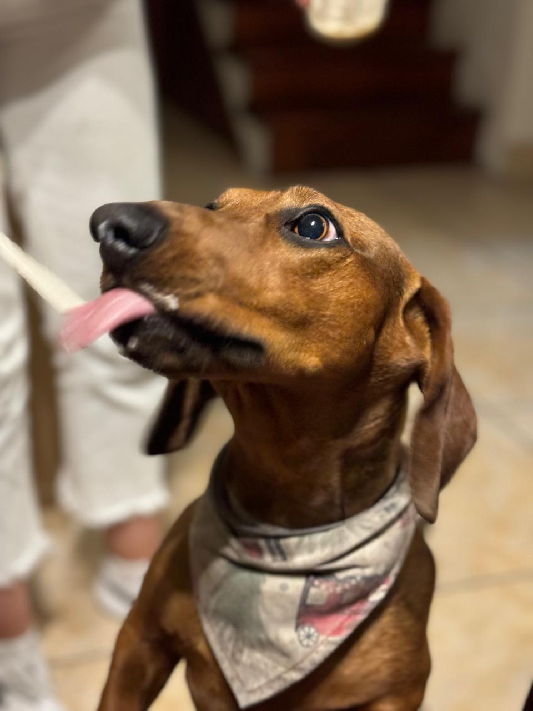
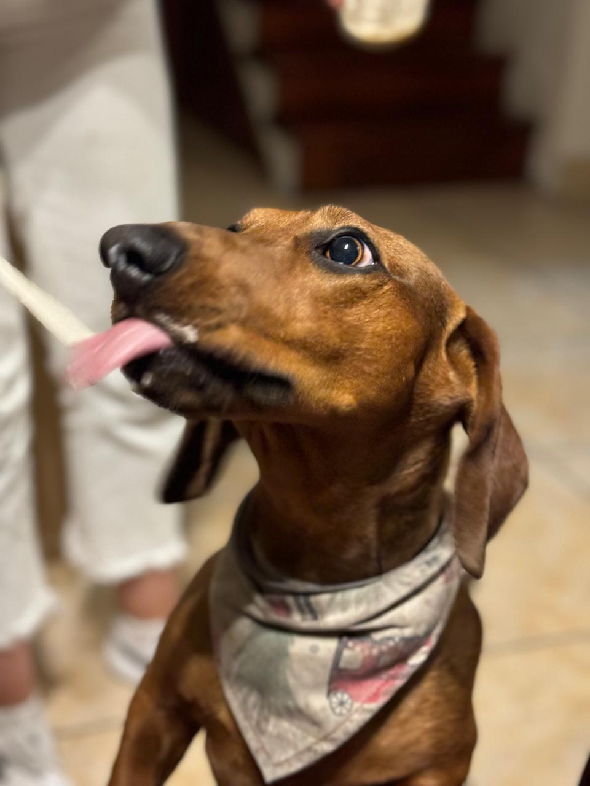

Nuestras bags más que un accesorio; son una declaración de estilo y compromiso con la artesanía y la sostenibilidad.
Hechas a mano con trapillo, material que ofrece una flexibilidad y resistencia incomparables.
Este material no solo es duradero, sino que también es respetuoso con el medio ambiente.
La inspiración detrás de Milo Bags proviene de mi valiente perro salchicha, quién con su energía, elegancia y espíritu es el principal modelo de la marca.